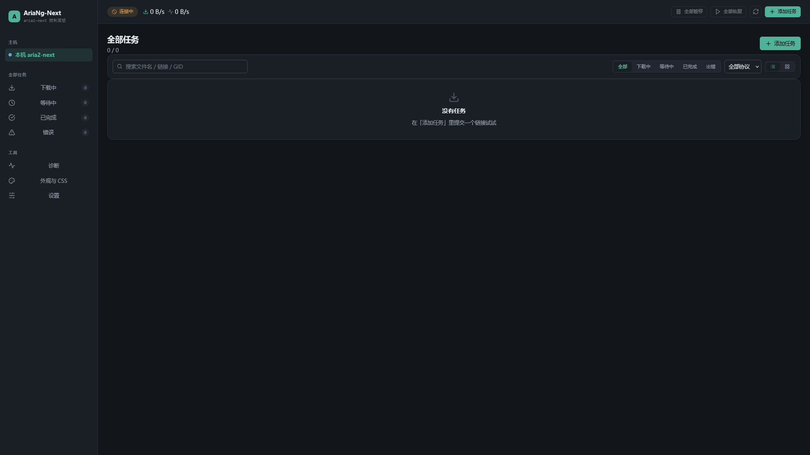
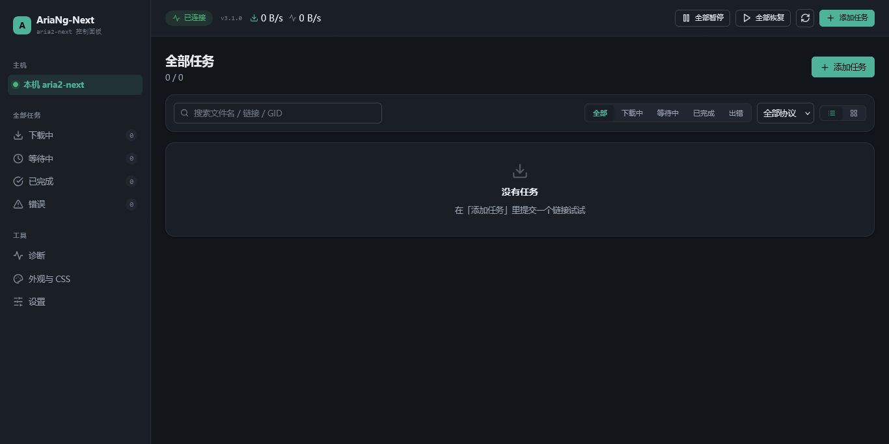

x≈108，中间空出约 70px 空洞。
文字之所以跑到中间，是因为它继承了 <button> 的 text-align: center，
而承载它的 .an-nav-item__label 是 flex: 1，被拉伸成了 167px 宽的盒子。

x≈45，与图标结束位置（x≈36）相距正好 8px，
恰好等于设计令牌 --an-space-2。右侧计数徽章仍保持右对齐。
<button> 的默认样式包含 text-align: center，这个值会被子元素继承。.an-nav-item__label 是 flex: 1，在 flex 布局里会被拉伸到占满剩余空间。center，就会在拉伸后的盒子里居中，于是与左侧图标之间出现巨大空隙。<a>（RouterLink），没有这个默认值，所以一直是对的 —— 这正是定位问题的突破口。.an-nav-item 里显式声明 text-align: left。
同一页面里的 .an-host-item（主机列表）早就有这一句，所以「本机 aria2-next」一直显示正常 —— 只有任务状态分段那几行漏了。